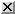

SegFit
SegFit rigidly fits atomic structures or maps into
segmentation regions
from Segger.
Along with that tool, it is part of the
Segger package described in:
Quantitative analysis of cryo-EM density map segmentation by watershed and
scale-space filtering, and fitting of structures by alignment to regions.
Pintilie GD, Zhang J, Goddard TD, Chiu W, Gossard DC.
J Struct Biol. 2010 Jun;170(3):427-38.
See also:
Segger documentation,
Fit in Map,
Volume
Viewer,
fitmap,
measure,
molmap,
mask
There are several ways to start
SegFit, a tool in the Volume Data category
(including from the
Volume Viewer
Tools menu).
The Structure or Map to fit
should be chosen from the pulldown menu of models.
It can be a density map or a molecule model (atomic structure).
Any atoms in the molecule model that are not desired for fitting,
such as solvent or extra chains, should be
deleted
before the fitting is done.
Clicking the Fit button at the bottom of the dialog performs the fitting.
The default settings are to fit the structure
to the selected regions
using the principal axes method. The regions are made transparent;
region transparency/opacity can be adjusted further using
Segger or the main Chimera menu
Actions... Surface.
Fit information is shown in a table:
- Corr
- the correlation,
also known as the cross-correlation score,
between the map that was segmented (the fitting target) and the map to fit
(either specified directly or
generated from the atomic structure)
- At Incl - atom inclusion,
fraction of atoms within the target map contour;
an atom is within the contour if its position in the map has a
density value above the current threshold setting in
Volume Viewer
- BB Incl - backbone-atom inclusion,
fraction of backbone atoms within the target map contour
- Clashes - fraction of atoms clashing with symmetry copies
(if clashes are being evaluated)
- Dens Occ - density occupancy, fraction of voxels within
the target segmentation region(s)
occupied by at least one atom of the fit structure
- Molecule - the fit structure, either a molecule model or a map
- Map - the fitting target, the map from which the
segmentation region(s) were derived
- Region - the segmentation region(s) used
for fitting
One or more rows (fits) can be chosen with the mouse.
The structure is repositioned as each fit is chosen.
The chosen fit(s) can be saved to files or removed from the table using
the SegFit menu.
Clicking Options reveals additional settings
(clicking the close button  on the right
hides them again):
- Treat all sub-models as one structure - whether to fit
submodels
with the same main model number (#2.1, #2.2, etc.)
collectively as a single structure instead of separately
- Density map resolution
[r] grid spacing [s]
- set parameters for generating a density map from the atomic structure,
to allow calculating correlation values for fits.
Each atom is described as a 3D Gaussian distribution of width proportional
to the resolution r and amplitude proportional to the atomic number
(as is done by the command
molmap).
The grid spacing s is the separation of points
along the X, Y, and Z axes of the generated map.
The resolution and spacing should be approximately the same as
for the map into which the structure is being fit (the map that was
segmented).
Clicking Fit or Calculate Map will generate the map from the
structure if it does not already exist.
- Which regions to use for fitting:
- Combined selected regions (default)
- use the selected
segmentation regions collectively
- Each selected region
- use each selected
segmentation region for a separate fit
- Groups of regions including selected region(s)
- generate groups of segmentation regions that include the
selected one, try
fitting to each group; save the best fits in the table
- Groups of regions including all regions
- combinatorially group subsets of all segmentation regions, try
fitting to each group; save the best fits in the table
- Alignment method:
- Mask map with region(s) to prevent large drifts
(off by default) - whether to mask the map with the
selected segmentation regions,
zeroing voxels outside the region(s) to prevent large displacements during
optimization
- Use Laplacian filter (off by default) - whether to apply
Laplacian filtering
to both the target map and the map to fit (which was either specified
directly or generated from the atomic structure).
This filter may emphasize contours in images and may help to distinguish
the correct fit from incorrect fits
at medium-to-low resolutions (~10å and lower).
- Optimize fits (on by default)
- whether to perform a
local optimization of
each fit. Optimization uses density both inside and outside the region(s)
chosen for fitting (unless the outside density is masked)
and can move a structure far from those region(s).
- Cluster fits that are < [d] Angstroms and < [a]
degrees apart (on by default)
- whether to coalesce fits that are similar in both location
(center-of-mass translation < d, default 5.0 Å)
and orientation (difference in quaternion angle < a,
default 3.0°) into a single fit with their average location
and orientation
Add top [N] fit(s) to list (empty to add all fits to list)
- how many fits to add to the list from the current round of fitting
(all, if N is not specified)
- Clashes with copies from symmetry [sym] (off by default)
- whether to evaluate clashes of the fit structure with its copies by
symmetry sym (e.g., C6); clicking Fit or
Detect will guess the symmetry of the map (see
measure
symmetry) if not already specified.
The “clashes” reported in the list are
the fraction of atoms in the fitted structure
within 3 Å of any atom in its symmetry copies.
Show displays the symmetry copies. The copies can be removed
using the SegFit menu.
SegFit Menu
Fit
- Delete selected fits from list
- remove the chosen row(s) from the table of fits
- Delete ALL fits from list
- empty the table of fits
- Place molecule copies
- add a copy of the structure in its fit position (as a new model) for
each chosen fit
- Place map copies
- if a map was fitted, add a resampled copy of the map in its fit position
(as a new model) for each chosen fit
- Close placed copies
- close copies of the fit atomic structure and/or map that were
added with the “place copies” options above or the button to
Show symmetry copies
- Save chosen fit molecules
- save a PDB file of the structure in its fit position for
each chosen fit
(each chosen row in the table of fits)
- Place selected map relative to segmented map
- add a resampled copy of the map currently specified as the
Structure or Map to fit
(as a new model) for each chosen fit
- Group regions by visible (Molecule) models
- group regions in the current segmentation
based on which visible structures they overlap the most
(use Model Panel
S checkboxes to set visibility)
- Group regions by chains in visible (Molecule) models
- group regions in the current segmentation
based on which chains of the visible structures they overlap the most
(use Model Panel
S checkboxes to set visibility)
- Show molecule axes
- display the principal axes
of the atomic structure as arrows
- Hide molecule axes
- hide the principal axes of the atomic structure
- Show overlapping regions - display only the regions that
overlap the atomic structure in its current position
(all regions can be displayed again using the
Regions
menu in Segger)
- Export fit scores
- save information in the table of fits to a text file
- Plot fit scores
- create a basic plot of the cross-correlation scores
in the table of fits
(PNG image, colored bars from left to right representing all fits in
the order listed)
UCSF Computer Graphics Laboratory / November 2020